Как загрузить данные из API Google Analytics в R: часть 2
Несколько лет назад я уже рассказывал о том как работать с API Google Analytics на языке R с помощью пакета RGA. Пакет RGA всем хорош, но он работает только с Google Analytics Core Reporting API v3, а уже давно вышла четвертая версия, у которой функционал намного шире.
Мы рассмотрим новый пакет googleAnalyticsR, написанный Марком Эдмондсом. Марк ведет личный блог и сайт с документацией к пакету, о котором сегодня пойдет речь.
В этой статье много примеров кода взято с официального сайта пакета googleAnalyticsR.
Изначально статья была написана и опубликована на блоге Netpeak
https://netpeak.net/ru/blog/kak-zagruzit-dannyye-iz-api-google-analytics-v-r-chast-2/

Какие дополительные функции есть в googleAnalyticsR
Самые интересные функции пакета googleAnalyticsR:
- автоматическая авторизация с помощью переменных среды;
- User Activity API, который дает вам возможность запрашивать сырые данные;
- расширенные возможности по сегментации данных;
- управление пользователями Google Analytics;
- продвинутая технология обхода семплирования;
- когортный анализ;
- возможность сравнивать данные за два указанных периода;
- пакетная отправка запросов;
- вычисляемые показатели.
Перед тем, как сделать свой первый запрос к API Google Analytics, необходимо пройти несколько подготовительных шагов.
- Выбрать наиболее подходящий способ авторизации.
- При необходимости создать проект в Google Cloud, если его у вас до сих пор нет.
- Создать ключ сервисного аккаунта или обычные учетные данные.
- Если создали сервисный аккаунт, дать на его почтовый адрес доступ к нужным аккаунтам Google Analytics.
- При необходимости создать переменные среды.
- Включить API Google Analytics.
В каждом из этих этапов есть свои нюансы, поэтому рассмотрим блоки подробно.
Авторизация
Работа с любым API начинается с авторизации. В googleAnalyticsR существуют такие способы:
- Авторизация со стандартными параметрами пакета.
- Авторизация через собственное приложение, созданное в Google Cloud Console.
- Авторизация через сервисный аккаунт.
1. Авторизация через стандартные параметры
Самый простой способ прохождения авторизации — использование ga_auth() со стандартными значениями аргументов, которые установлены по умолчанию.
Пакет googleAnalyticsR довольно активно используется, и большинство пользователей проходят авторизацию таким способом. В связи с этим вы можете столкнуться с лимитом 50000 запросов к API из одного приложения в сутки.
Поэтому я рекомендую использовать один из двух описанных ниже способов авторизации.
2. Авторизация через собственное приложение
Для авторизации через свое приложение необходимо зайти в Google Cloud Console и зарегистрировать его.
- Если у вас на данный момент не создан ни один проект, создаем его, нажав “+”.
- Переходим в «Основное меню» > «API и сервисы» > «Учетные данные».
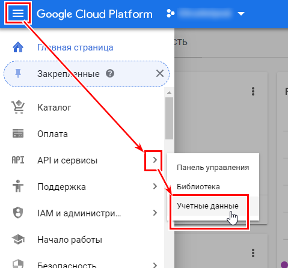
- «Создать учетные данные» > «Идентификатор клиента OAuth».
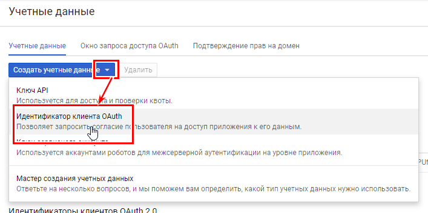
- Вводим название.
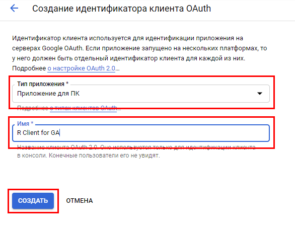
- Далее будет сгенерирован id и secret вашего приложения, и для дальнейшей работы вам необходимо скачать JSON файл со сгенерированными данными.
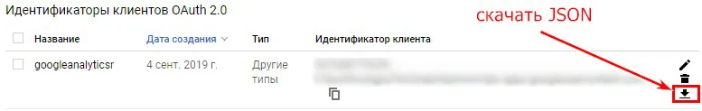
После того, как вы создали приложение и скачали в JSON формате учетные данные, можете использовать его для авторизации:
ga_auth(token = "D:/ga_auth/ga.json", email = "yourmail@gmail.com")
В представленном выше коде вам необходимо изменить путь к скачанному JSON файлу и указать свою почту, под которой есть доступ к нужным аккаунтам Google Analytics. Далее в браузере подтверждаете разрешение на доступ к данным.
Автоматическая авторизация через свое приложение
Теперь вы можете настроить автоматическую авторизацию, сделать это можно несколькими способами.
Первый заключается в установке переменных окружения с помощью R функции Sys.setenv. Важно прописать переменные до подключения пакета:
Sys.setenv(GAR_CLIENT_JSON = "D:/ga_auth/ga.json")
Sys.setenv(GARGLE_EMAIL = "yourmail@gmail.com")
library(googleAnalyticsR)
Если вы сделали все верно, то при подключении пакета в консоли вы увидите сообщение про автоаутентификацию:
Setting your own client.id
2019-09-05 13:02:20> Setting client.id from gar_auth_configure(path = json)
Successfully auto-authenticated via yourusername@gmail.com
Второй способ — прописать эти переменные в файл .Renviron. Этот файл считывается при старте каждой R сессии, и позволяет вам задавать необходимые переменные окружения. Находится этот файл в домашнем каталоге языка R, посмотреть расположение домашнего каталога можно с помощью команды path.expand(“~”).
[1] "C:/Users/Alsey/Documents"
Если такой файл у вас есть, то изначально он, скорее всего, будет пустой, но даже если это не так, просто добавьте в него две строки. Если файла вообще нет, создайте обычный тектовый файл, впишите в него указанные две строки и переименуйте в .Renviron:
GAR_CLIENT_JSON="D:/ga_auth/ga.json"
GARGLE_EMAIL="yourusername@gmail.com"
И последний способ, если вы работаете на Windows — создайте две переменные окружения: GAR_CLIENT_JSON, GARGLE_EMAIL.
Для Windows 10 и Windows 8
- В строке «Поиск» выполните поиск: «Система (Панель управления)».
- Нажмите на ссылку «Дополнительные параметры системы».
- Нажмите «Переменные среды».
- В разделе «Переменные среды» нажмите «Создать».
- По очереди создайте две переменные.
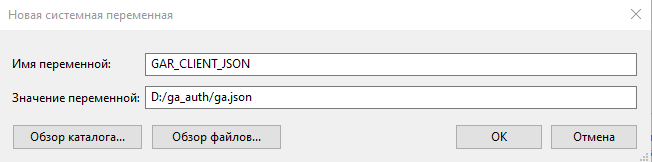
В случае использования второго и третьего метода установки опций вы будете автоматически авторизованы в Google Analytics при подключении пакета googleAnalyticsR.
3. Авторизация с помощью сервисного аккаунта
Третий способ авторизации позволяет вам использовать сервисный аккаунт. Для начала необходимо создать сервисный аккаунт, перейдите в Google Cloud Platform и заполните название и описание сервисного аккаунта.
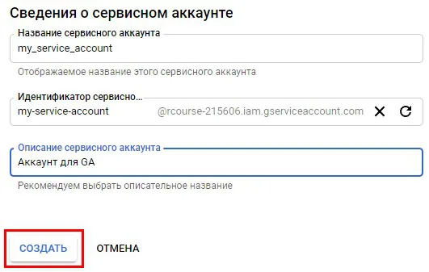
Права доступа для сервисного аккаунта мы будем задавать позже, через вебинтерфейс Google Analytics, поэтому на следующем шаге просто жмем «Продолжить».
Создаем JSON ключ:
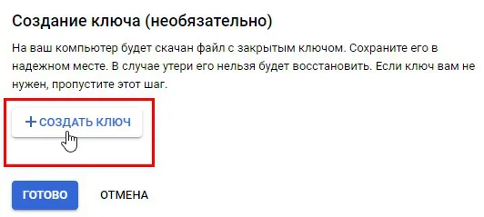
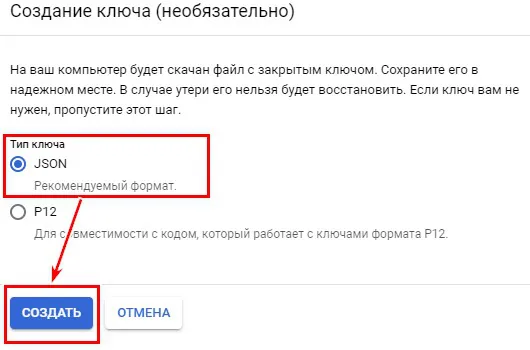
Скачиваем JSON и нажимаем «Готово».
Открываем только что созданный ключ и копируем почту:
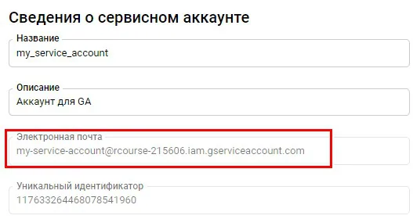
Заходим в Google Analytics и расшариваем доступ к нужным аккаунтам, ресурсам и представлениям на этот электронный адрес.
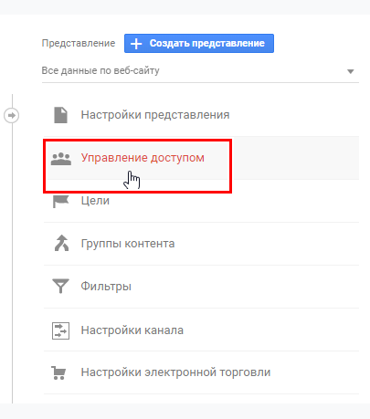
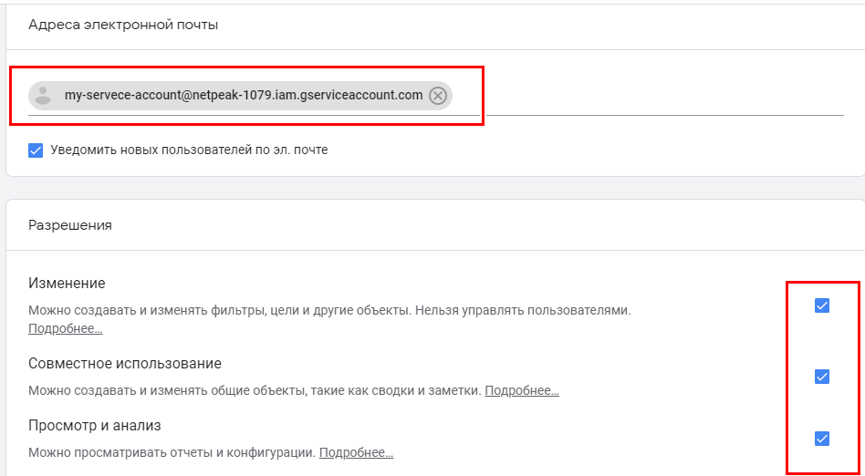
Далее проходим авторизацию с помощью функции googleAuthR::gar_auth_service, передав в аргумент json_file путь к json файлу с учетными данными.
googleAuthR::gar_auth_service(json_file = "D:/ga_auth/service.json")
Также вы можете настроить автоматическую авторизацию через сервисный аккаунт, создав переменную среды GA_AUTH_FILEи передав в нее путь к скачанному JSON файлу.
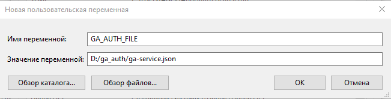
Включаем Google Analytics API
Последний подготовительный шаг — включить в вашем проекте API сервисы Google Analytics.
Сделать это можно через библиотеку в Google Cloud Platform. Либо перейдите по прямым ссылкам и включите:
Включенные API выглядят так:
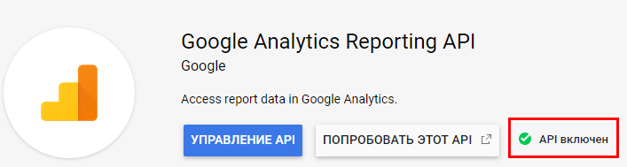
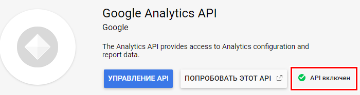
На этом все подготовительные работы закончились и можно сделать первый запрос к API Google Analytics.
Metadata API
Метадата API — самый простой программный интерфейс в Google Analytics, который предназначен для запроса списка возможных полей.
В googleAnalyticsR для этого API существует две функции, при этом они не требуют передачи каких либо дополнительных аргументов:
- google_analytics_meta() — таблица метрик и параметров, с описанием;
- allowed_metric_dim() — получить вектор с имена всех возможных полей.
Management API
В статье, о которой я говорил в начале поста, я подробно описывал API интерфейсы, поэтому не буду дублировать эту информацию.
Загрузка объектов из иерархии Google Analytics
- ga_account_list() — загрузка информации по всем доступным вам аккаунтам, ресурсам и представлениям;
- ga_accounts() — получить список доступных вам аккаунтов;
- ga_webproperty_list() — получить список всех ресурсов из одного аккаунта;
- ga_webproperty() — получить метаданные по одному ресурсу;
- ga_view_list() — получить список представлений из конкретного ресурса;
- ga_view() — получить метаданные по одному конкретному представлению.
То есть все перечисленные функции позволяют загрузить различные объекты и метаданные из иерархии Google Analytics. При этом функция ga_account_list() запрашивает всю иерархию объектов для конкретного пользователя.
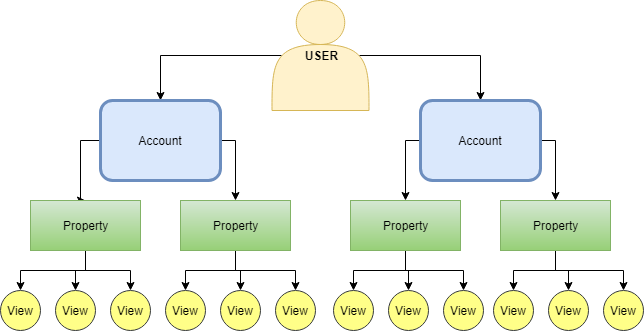
В зависимости от звена, занимаемого в иерархии, вам необходимо с помощью аргументов указывать родительский объект. Например, если вы хотите получить список всех ресурсов, нужно указать, из какого аккаунта вы хотите получить подчиненные ресурсы. Соответственно при запросе данных по представлениям вам необходимо указывать родительский ресурс и аккаунт.
Все перечисленные функции, кроме ga_account_list(), в зависимости от места в иерархии требуют использования одного или более аргументов:
- accountId — идентификатор аккаунта;
- webPropertyId — идентификатор ресурса в формате UA-XXXXX-X;
- profileId — идентификатор представления.
Идентификация пользователя задается при авторизации, поэтому в функциях указывать логин пользователя не нужно.
Управление пользователями
Пакет googleAnayticsR так же позволяет вам управлять пользователями. Ниже приведен список функций:
- ga_users_list() — загрузка списка пользователей у которых есть доступ к аккаунту, ресурсу или представлению;
- ga_users_delete() — удаление доступа для конкретного пользователя;
- ga_users_delete_linkid() —удаление доступа по LinkID;
- ga_users_add() — предоставить доступ пользователю;
- ga_users_update() — редактирование прав доступа определённого пользователя.
Пример кода:
# добавление пользователя
ga_users_add(email = c("newuser@gmail.com"),
permissions = "EDIT", accountId = 12345)
# добавляем прав пользователю
# список изменений
o <- list(permissions = list(local = list("MANAGE_USERS")))
# расширяем права пользователю
ga_users_update("UA-1112233-1:1234567890123456789",
update_object = o,
accountId = 12345,
webPropertyId = "UA-1112233-1")
# удаляем доступ для пользователя
ga_users_delete("newuser@gmail.com", accountId = 12345)
LinkId можно получить из таблицы с помощью функции ga_users_list().
В Google Analytics существуют уровни доступа для пользователей:
- MANAGE_USERS — позволяет выполнять запросы на запись к API разрешений пользователей;
- EDIT — позволяет изменять ресурсы управления данными;
- COLLABORATE — позволяет создавать, изменять и удалять объекты, а также предоставлять доступ к ним;
- READ_AND_ANALYZE — позволяет просматривать и использовать отчёты.
Подробнее о каждом можно узнать в Google Справке.
Другие полезные функции для работы с Management API
- ga_filter_list() — cписок фильтров;
- ga_experiment_list() — cписок экспериментов;
- ga_goal_list() — cписок целей;
- ga_remarketing_list() — cписок ремаркетинговых аудиторий;
- ga_segment_list() — cписок сегментов.
Google Analytics Reporting API v4
Reporting API — это основный API, предназначенный для загрузки статистики из Google Analytics программным путем.
Основная функция для запроса отчетов — google_analytics. У нее такой набор аргументов:
- viewId — ID представления Google Analytics, из которого необходимо экспортировать данные;
- date_range — отчетный период, задается в формате вектора дат из двух или четырех элементов. Например c (start, end), или c (start1,end1,start2,end2). Даты необходимо указывать в формате «ГГГГ-ММ-ДД»;
- metrics — список показателей, которые вам необходимо запросить из API;
- dimensions— список параметров, которые вам необходимо запросить из API;
- dim_filters, met_filters — аргументы предназначенные для фильтрации данных, о них более подробно будет написано ниже;
- order — сортировка данных, так же будет рассмотрена более подробно;
- segments — применение к данным сегментов;
- pivots — позволяет изменять форму возвращаемых данных;
- cohorts — запрос данных по когортам;
- max — максимальное количество строк в запросе, для того, чтобы получить все строки укажите -1;
- samplingLevel — уровень семплирования;
- metricFormat — тип данных в возвращаемых метриках;
- anti_sample — включение механизма обхода семплинга данных;
- anti_sample_batches — алгоритм обхода семплинга, можно указать auto, или указать количество дней, по которым будет происходить разбивка подзапросов;
- slow_fetch — механизм замедления отправки запросов, при больших запросах помогает избежать 500-й ошибки;
- rows_per_call — управляет количеством строк, запрашиваемым за один запрос, не более 100000.
Простой вызов функции будет выглядеть так:
google_analytics(ga_id,
date_range = c("2020-01-01", "2020-01-10"),
metrics = "sessions",
dimensions = "date")
Вместо ga_id подставьте идентификатор представления, из которого хотите получить данные. Такой запрос вернет вам количество сеансов в разрезе дней с 1 по 10 января 2020 года.
Полный список всех параметров и показателей можно найти в Dimensions & Metrics Explorer, либо запросить с помощью функций, рассмотренных ранее в разделе про Metadata API. Работу с некоторыми аргументами стоит рассмотреть более подробно.
date_range — сравниваем данные за разные периоды
Если передать в аргумент date_range вектор из двух или четырех дат, во втором случае вы получите таблицу сравнения показателей за указанные периоды.
google_analytics(ga_id,
date_range = c("16daysAgo", "9daysAgo", "8daysAgo", "yesterday"),
dimensions = "source",
metrics = "sessions")
Приведенный выше код сравнит количество сессий по источникам за 7 предыдущих дней с 7 днями, которые были до них.
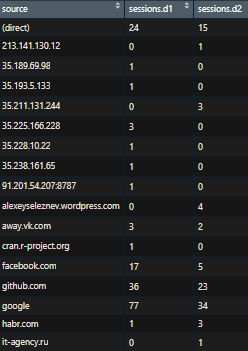
delta_sess <- order_type("sessions","DESCENDING", "DELTA")
google_analytics(ga_id,
date_range = c("16daysAgo", "9daysAgo", "8daysAgo", "yesterday"),
dimensions = "source",
metrics = "sessions",
order = delta_sess)
Также можно отсортировать полученный результат в порядке убывания или возрастания дельты по указанному показателю с помощью функции order_type(). То есть получить рейтинг источников, по которым был максимальный рост или падение трафика.
Фильтрация данных
Для тех, кто привык работать с Core Reporting API v3, можно использовать аргумент filtersExpression.
Но так как googleAnalyticsR работает с более новой версией Core Reporting API v4, рекомендую использовать другой подход.
Для фильтрации данных служит целый набор дополнительных функций:
- met_filter — создает объект фильтрации для показателей;
- dim_filter — создает объект фильтрации для параметров;
- filter_clause_ga4 — конвертирует объекты фильтрации в формат для API v4 и позволяет задать логическую И / ИЛИ связь, если вы одновременно применяете несколько фильтров.
При использовании функции filter_clause_ga4 объекты фильтрации необходимо обвернуть в функцию list.
И аргументы dim_filters и dim_filters. Пример для одного условия фильтрации:
campaign_filter <- dim_filter(dimension="campaign",operator="REGEXP",expressions="welcome")
my_filter_clause <- filter_clause_ga4(list(campaign_filter))
data_fetch <- google_analytics(
ga_id,date_range = c("2016-01-01","2016-12-31"),
metrics = c("itemRevenue","itemQuantity"),
dimensions = c("campaign","transactionId","dateHour"),
dim_filters = my_filter_clause)
Пример применения одновременно нескольких фильтров с указанием логической связи:
mf <- met_filter("bounces", "GREATER_THAN", 0)
mf2 <- met_filter("sessions", "GREATER", 2)
df <- dim_filter("source","BEGINS_WITH","1",not = TRUE)
df2 <- dim_filter("source","BEGINS_WITH","a",not = TRUE)
fc2 <- filter_clause_ga4(list(df, df2), operator = "AND")
fc <- filter_clause_ga4(list(mf, mf2), operator = "AND")
ga_data1 <- google_analytics(
ga_id,
date_range = c("2019-07-30","2019-10-01"),
dimensions=c('source','medium'),
metrics = c('sessions','bounces'),
met_filters = fc,
dim_filters = fc2)
Вычисляемые показатели
Вы можете вычислять собственные показатели на лету с помощью функции вычисляемых показателей. По смыслу они похожи на вычисляемые показатели в интерфейсе Google Analytics.
my_custom_metric <- c(visitPerVisitor = "ga:visits/ga:visitors")
ga_data4 <- google_analytics(ga_id,
date_range = c("2019-07-30",
"2019-10-01"),
dimensions=c('medium'),
metrics = c(my_custom_metric,
'bounces'),
metricFormat = c("FLOAT","INTEGER"))
Для этого достаточно создать именнованный вектор, в который необходимо передать формулу расчета. В нашем примере мы вычисляем количество сеансов на одного пользователя.
Аргумент metricFormat позволяет указать для каждой метрики тип данных из поддерживаемых:
- METRIC_TYPE_UNSPECIFIED — тип показателя не задан;
- INTEGER — целочисленное значение;
- FLOAT — число с плавающей точкой;
- CURRENCY — валюта;
- PERCENT — проценты;
- TIME — время в формате ЧЧ:ММ:СС.
Более подробно о каждом типе можно узнать в официальной справке Google Analytics.
Сегменты
Вы можете использовать устаревший способ обращения к сегментам, позаимствованный из API v3.
segment_def_for_call <- "sessions::condition::ga:medium=~^(cpc|ppc|cpa|cpm|cpv|cpp)$"
seg_obj <- segment_ga4("PaidTraffic", segment_id = segment_def_for_call)
segmented_ga1 <- google_analytics(ga_id,
c("2019-07-30","2019-10-01"),
dimensions=c('source','medium','segment'),
segments = seg_obj,
metrics = c('sessions','bounces')
)
Но сегменты в API v4 более функциональные, хоть и значительно сложнее.
Для создания сегмента в API v4 следуйте иерархии функций:
- segment_element— позволяет задать условия фильтрации (по какой метрике или измерению вы будете определять сегмент). Далее полученный объект необходимо передать либо в функцию segment_vector_simple() либо в segment_vector_sequence();
- segment_vector_simple() и segment_vector_sequence() — позволяют определить, является ли ваш сегмент последовательностью или нет;
- segment_define() — задает логическую последовательность в сегменте;
- segment_ga4() — позволяет задать уровень действия сегмента, то есть пользователь или сеанс, а также дать сегменту имя, которое будет отображаться в результирующей таблице при вызове параметра ga:segment.
Пример создания и использования сегмента:
se2 <- segment_element("medium",
operator = "EXACT",
type = "DIMENSION",
expressions = "organic")
se3 <- segment_element("medium",
operator = "EXACT",
type = "DIMENSION",
not = TRUE,
expressions = "organic")
sv_sequence <- segment_vector_sequence(list(list(se2),
list(se3)))
seq_defined2 <- segment_define(list(sv_sequence))
segment4_seq <- segment_ga4("sequence", user_segment = seq_defined2)
segment_seq_example <- google_analytics(ga_id,
c("2019-08-01","2019-09-01"),
dimensions=c('source','segment'),
segments = segment4_seq,
metrics = c('sessions','bounces')
)
Синтаксис сегментов достаточно сложный, поэтому вы можете использовать готовый аддон для RStudio и создавать сегменты с помощью графического интерфейса.
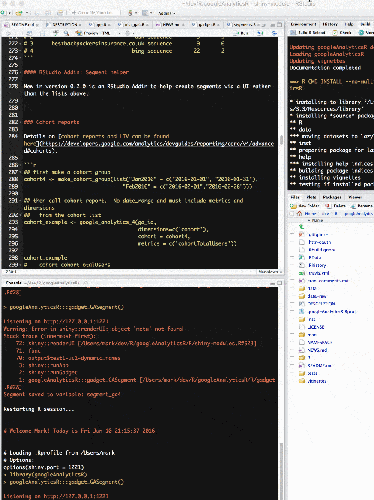
Когортный анализ
Когортный анализ в Google Analytics: пошаговая инструкцияЕще одна функция, недоступная в API v3. Если вы пока не знаете, что такое когортный анализ и как читать этот отчет, рекомендую сначала прочитать нашу статью по теме.
Для получения когортного отчета выполните шаги:
- Создайте когорты с помощью функции make_cohort_group().
- Используйте аргумент cohort в функции google_analytics().
Пример создания когортного отчета:
cohort4 <- make_cohort_group(list("Oct2019" = c("2019-10-01", "2019-10-31"),
"Feb2019" = c("2019-11-01", "2019-11-30"),
"Dec2019" = c("2019-12-01", "2019-12-31")))
google_analytics(ga_id,
dimensions=c('cohort','ga:cohortNthMonth'),
metrics = c('cohortTotalUsers','ga:cohortActiveUsers'),
cohort = cohort4
)
Список специальных параметров и показателей для когортного отчета можно в официальной документации.
User Activity API
Самый новый API из всех доступных в Google Analytics. Позволяет запрашивать данные об активности пользователя, то есть дает возможность получать сырые данные.
Чтобы получить сырые данные по пользователям изначально необходимо получить список идентификаторов — client_id всех пользователей. Сделать это можно, запросив параметр clientId.
cids <- google_analytics(ga_id,
date_range = c("16DaysAgo","yesterday"),
metrics = "sessions", dimensions = "clientId")
Используя функцию ga_clientid_activity() вы можете получить все действия любого посетителя сайта за указанный период. Также на вход можно передать вектор из идентификаторов клиентов.
users <- ga_clientid_activity(cids$clientId,
ga_id,
date_range = c("16DaysAgo","yesterday"))
Аргументы функции ga_clientid_activity():
- ids — вектор содержащий ClientID или UserID;
- viewId — идентификатор представления;
- id_type — тип идентификатора, возможные значения: “CLIENT_ID”, “USER_ID”;
- activity_type — фильтрация по типу действий, которые вы хотите получить, возможные значения: “PAGEVIEW”, “SCREENVIEW”, “GOAL”, “ECOMMERCE”, “EVENT”;
- date_range — диапазон дат, за который вы хотите получить данные по посетителям.
В результаты работы функции вы получите объект со всеми сеансами и хитами. Если объект называется как в моем примере users, то обратиться к сеансам или хитам можно так:
users$sessions # сеансы
users$hits # хиты
Выводы
В этой статье мы подробно рассмотрели основные возможности API Google Analytics и пакета googleAnalyticsR. Теперь вы умеете:
- проходить авторизацию в API Google Analytics различными способами;
- получать сырые данные из API Google Analytics;
- получать данные в разрезе когорт;
- запрашивать стандартные отчеты из Google Analytics Core Reporting API.
На самом деле уместить в одну статью весь доступный в googleAnalyticsR функционал довольно сложно, но я постарался описать самый важный. Если у вас возникли вопросы, задавайте в комментариях.
Если вам понравилась данная статья думаю вам так же будут интересны мои телеграм и youtube каналы, подписывайтесь.